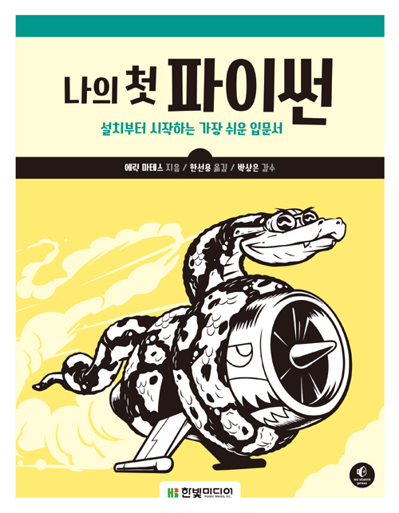

한국에서 일어나는 파이썬 관련 소식을 전합니다.
블로그
파이썬에서 2중 리스트를 flatten하기 by 정겨울 님
2중 리스트를 풀어서 일반 리스트로 만드는 다양한 방법과 각 방법별 성능을 비교한 결과를 정겨울 님이 정리하였습니다.
Numpy와 itertools의 차이는 약 100배, Numpy와 sum()의 차이는 1000배 이상이라고 하네요.
Python을 위한 ctags 세팅 by 송은우 님
Vim에서 파이썬 개발용 ctags 설정 팁을 송은우 님이 공유하였습니다.
프로젝트
파이썬용 DI 라이브러리 Autowire by Hardtack님
파이썬용 Dependency Injection 라이브러리를 Hardtack님이 공개하였습니다. 마음에 드는 도구가 없어 간단한 POC 프로젝트를 만들어 보았다라고 하시네요.
파이썬 같은 동적 언어에서 DI가 필요한지에 대해서도 파이썬 코리아 페이스북에서 토론이 이어지고 있으니 참고하세요
행사
제4회 파이썬 격월 세미나

제4회 파이썬 격월 세미나에서 발표자를 모집합니다. 이번 세미나의 주제는 '성장'이어서, 중,고등,대학생 들의 지원을 기다리고 있답니다.
- 일시 : 2017년 5월 27일(토요일) 오후 2시
- 장소 : 쿠팡
- 발표자 모집 마감 : 2017년 5월 6일 오후 11시 59분 59초
- 발표자 선정 안내 : 2017년 5월 8일
신간
나의 첫 파이썬 by 한빛미디어

- 에릭 마테스 지음
- 한선용 옮김
- 30,000원
- 664쪽(1793g)